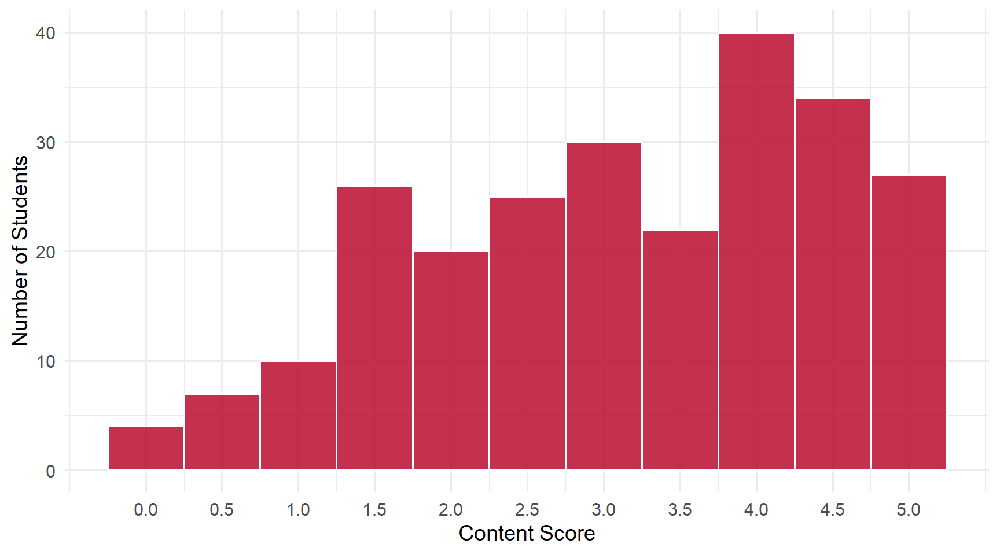
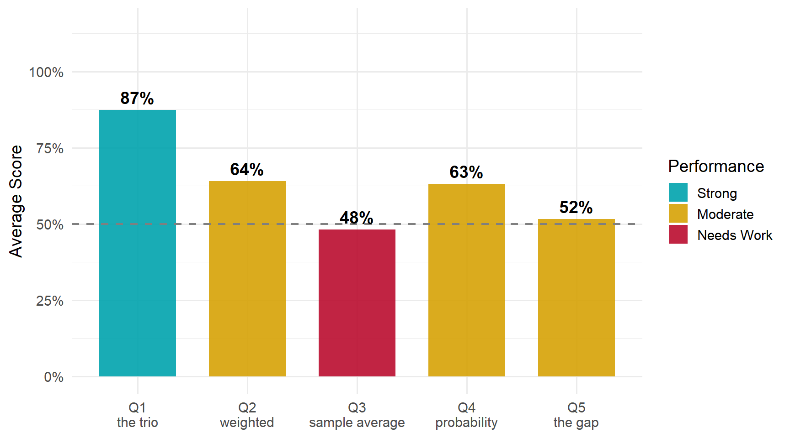

7 Daily 04 — Sep 1
7.1 Class Performance
Students: 245 | Content mean: 3.14 / 5 | Median: 3.5 | SD: 1.33 | Mean daily score: 9.26 / 10
Content scores ranged from 0 to 5 out of 5. (Your daily score adds the 8-point attendance credit for submitting; each question is worth 0.4 of the remaining 2 points.)
This was the hardest daily of the term so far, and it was hard in an interesting way. Very little of what went wrong was “I didn’t know.” Most of it was one of two things: using a word that is nearly right, or reporting a number in the wrong units. Those are both fixable in a way that not knowing is not.
NoteAbout Q2’s scoring
Q2 was graded all-or-nothing — the recalled word is either the right one or it isn’t, so there was no half-credit tier on that question.
7.2 Score Distribution
7.3 Performance by Question

7.4 Questions
7.4.1 Q1: The ___ is what we want to learn about; the ___ is what we compute; it gives us an ___.
TipCorrect Answer
Estimand, estimator, estimate — in that order.
- The estimand is the target: a fixed, unknown feature of the population.
- The estimator is the rule you apply to a sample.
- The estimate is the number that rule returns on the sample you have.
WarningCommon Errors
- The right trio in the wrong order. The most common partial answer by a wide margin — usually with the last two swapped, or the first two. The words are memorized; the roles are not. That distinction is the entire content of the question, and it earned half credit rather than full for that reason.
- The ordinary-English derivative instead of the technical term — “estimated” where estimand belongs, “estimation” where estimator belongs. These are the words English would produce; the course defined two specific nouns instead, and only those two name the target and the rule.
- Generic statistics vocabulary substituted wholesale — “parameter, statistic, estimate” was the recurring version, along with “population, sample, …” and “variable, data, …”. Notably, “parameter” in slot 1 followed by a correct “estimator, estimate” showed up often enough to look like transfer from a previous stats course. It isn’t wrong as English, but this course gave the target a name.
- Truncated lists — one or two of the three words with the remaining blanks empty.
7.4.2 Q2: A random variable’s expected value is a ___ average of all its possible outcomes.
TipCorrect Answer
Weighted — each possible outcome weighted by its probability. That is what makes \(E[X] = \sum x \cdot p(x)\) an average rather than a sum.
WarningCommon Errors
- “Sample.” The single most common wrong answer, and it is a borrowed one — the answer to Q3, sitting one question away. Q2 and Q3 traded answers in both directions across the class.
- “Mean.” Restates the thing being defined. An expected value is a kind of mean; the question asks what kind.
- Summation words — “sum,” “sum of,” “total,” “integral.” These students have the formula in mind and have named the operator instead of the weighting. Adding up the outcomes without their probabilities is not an expected value; the probabilities are what make the sum an average.
- “Population,” “expected,” “estimated.” Naming a scope, or relabelling the quantity, rather than describing how the average is taken.
Misspellings of the right word — “wieghted,” “weighed” — were graded as correct recall and cost nothing.
7.4.3 Q3: We estimate a random variable’s expected value using its ___.
TipCorrect Answer
Its sample average (equivalently, the sample mean) — the average of the data you actually have.
WarningCommon Errors
- Bare “average” or “mean.” The largest single group, and it earned half credit rather than full. The word sample is not decoration here: it is the entire point. The expected value is a property of the distribution; the sample average is a number you compute from data. Dropping “sample” collapses the two.
- Bare “sample” with no averaging word — “sample,” “sampling,” “sample data,” “observations.” The mirror error: the qualifier survives and the statistic disappears. A sample is not an estimate of anything; the average of a sample is.
- “Weighted average.” This one is worth staring at, because it is the clearest possible symptom. A weighted average of the outcomes is the expected value — so this answer says we estimate the expected value using the expected value. The estimator and the estimand have collapsed into each other.
- Distribution-shaped answers — “lognormal,” “sampling distribution,” “distribution,” “expected outcomes.” These read the blank as asking what the random variable looks like, rather than what number we compute from data.
- Course jargon fired off at random — “CEF,” “regression line,” “standard deviation,” “integral,” “log.” These clustered on pages with several other boxes left empty.
ImportantWorth Your Attention
Q3 was the weakest question on the daily at 48%, and it is not a vocabulary problem — it is the conceptual distinction of this stretch of the course.
Look at what the two big error groups have in common. “Average” without “sample” names a statistic without saying it comes from data. “Sample” without “average” names the data without saying what you compute from it. “Weighted average” names the thing being estimated as its own estimator. All three are the same failure: the target and the tool have merged.
Q1 asked you to name that distinction and 87% of you did. Q3 asked you to use it and 48% did. Naming it is not the same as having it, and this is the one to carry forward.
7.4.4 Q4: The expected value of an indicator variable is the ___ that it equals ___.
TipCorrect Answer
The probability that the variable equals 1. (Equivalently: the share of observations equal to 1. “Chance” and “likelihood” work as well as “probability.”)
WarningCommon Errors
- The second blank left empty. The most common partial answer: “probability” written, and then nothing. The concept arrived and the value never did — but the question has two blanks because an indicator’s expected value is the probability of a specific outcome.
- “True” or “yes” in the second blank. A near-miss with real understanding behind it — for an indicator, “equals 1” and “is true” mean the same thing. But the question says the variable takes the values 1 and 0, and asks which one, so the answer is the value.
- “0” in the second blank. Right family, wrong end of it.
- Circular first blanks — “average” or “mean” paired with a correct 1. This says the expected value is the mean, which is true and says nothing. The content of the question is that for an indicator, that mean is a probability.
- “0.5” or “50%.” This assumes a fair coin. An indicator’s expected value is whatever the probability happens to be, and it is only 0.5 if the two outcomes are equally likely.
7.4.5 Q5: The gender gap in the likelihood of earning at least $100,000 was ___.
TipCorrect Answer
3.54 percentage points — 6.24% of men aged 25–34 earned six figures, against 2.70% of women. The gap between two percentages is measured in percentage points.
WarningCommon Errors
- “3.54%” — the single most common answer on the entire daily. The arithmetic was right and the label was wrong, and that is exactly what the question was built to catch. See below.
- Bare “3.54” with no units at all. The next most common. The question asked for the number and its units, in those words.
- Decimal-place slips, in both directions and both frequent: “0.0354” (the proportion form, sometimes labelled “percentage points,” so that the units and the magnitude disagree) and “35.4” (the decimal shifted one place). Several students showed \(0.0624 - 0.0270 = 0.0354\) correctly and then converted wrongly at the last step.
- One share instead of the difference — “6.24%” or “2.70%” written as the answer, sometimes with the subtraction visible as work above it. The gap is the difference, not either component.
- The ratio instead of the gap — “men were about twice as likely.” True, and a perfectly good sentence about the data, but a different quantity from the one asked for.
- Dollar amounts — “$35,400,” “$10,100,” “3.54 thousand.” The $100,000 in the prompt pulled some answers toward money. The quantity asked about is a likelihood gap, measured in percentage points, not dollars.
- “9 percentage points” recurred noticeably, stated confidently and with correct units. If that was your answer, go back and find which figure in the CPS output you read — the units were right, so the reading is the thing to fix.
ImportantWorth Your Attention
A percentage and a percentage point are not the same unit, and this is the distinction to take from this daily.
6.24% of men and 2.70% of women earned six figures. The difference between those two numbers is 3.54 percentage points — a subtraction of two percentages. It is not 3.54%, because “3.54%” describes a proportion of something, and this number is not a proportion of anything.
Worth seeing how different the two claims are: men were about 2.3 times as likely as women to earn six figures. If you report the gap as “3.54%,” a reader who takes you literally will think the difference was small. In percentage points it looks small; as a ratio it is enormous. Same data, and the unit you choose decides which story a reader gets.
This shows up constantly in economic reporting — unemployment, inflation, interest rates, vote shares. Whenever you subtract two percentages, the answer is in percentage points.
7.5 What the Class Did Well
The vocabulary of estimation landed — 87% on Q1. Estimand, estimator and estimate are three words invented for this course’s purposes, introduced recently, and most of the class produced all three in the right order.
Almost nobody failed to compute the Q5 gap. The overwhelming majority of answers to the hardest-scoring question had the right digits in them. The credit was lost at the label, not the arithmetic — which is a much better place to lose it.
Where answers were wrong, they were usually adjacent rather than random. “Sample” for “weighted,” “true” for “1,” “estimated” for “estimand” — these are the errors of students who did the reading and are still settling the terms.
7.6 What to Review
- Percentage versus percentage points. Subtracting two percentages gives percentage points. This is the highest-value thing on the page and it will recur all term.
- The estimand/estimator/estimate distinction, used rather than recited. The expected value is the target; the sample average is the tool. If your answer to “what do we estimate it with” is another name for the expected value itself, the two have merged.
- The word sample is load-bearing. “Average” and “sample average” are not interchangeable in this course.
- Answer both blanks. Q4’s most common partial answer was a correct first blank followed by an empty second one.
- Watch the clock on the back half. Blank rates climbed steadily from Q1 to Q5, and some pages had only the first box filled. The later questions were not harder to start — they were reached with less time.
NoteHow this was graded
Every paper was scored twice, independently, against the same published rubric, by graders who could not see each other’s scores or your name. The two passes agreed on more than 98% of all scores; every disagreement was reviewed a third time against the rubric and settled with a written reason. Submitting the daily earns 8 of 10 regardless of content.